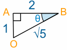
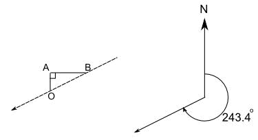

Activity: A Walk in the Desert 2
How to find what direction to travel in
Crash!

If you haven't met Jade yet, then you should do the activity A Walk in the Desert first.
Jade crash-landed in the desert, but came up with a cunning plan to find the nearest village:
- Fill up a water bottle from the plane, and take a compass,
- Then walk 1 km north, change direction and walk 2 km east, then 3 km south, 4 km west, 5 km north, 6 km east, and so on, like this:

This way Jade will find the village no matter what direction it is in, and can (hopefully) find the way back to the plane for fresh water and shade when needed.
But if Jade does not find the village, we need a way to return to the plane every few hours for rest and a refill of the water bottle.
The distances were worked out in Activity: A Walk in the Desert
Now we need to find the directions.
To get back to the plane from point A is easy: retrace the steps (go south for 1 km).
But what about point B? What direction should Jade walk from B to get back to the plane?
We looked at this triangle before:

and calculated the distance OB = √5 km
To find the direction we need to calculate an angle, like angle ABO, which is marked θ in the following diagram:

To find the size of angle θ we need to use Trigonometry
We know all three sides, but it's easier to use the whole numbers, so we will use the Opposite AO = 1 and the Adjacent AB = 2. SOHCAHTOA tells us we should use Tangent:
Now use the tan-1 button or the atan button on your calculator:
So, the angle is 26.6°
But what direction is that?


Well, it's somewhere between south and west, but nearer to west than south. So maybe we could say west south-west.
But that's not very accurate. Jade might miss the plane! Maybe it won't matter too much in this case since B isn't too far away from the plane.
But we need to be more accurate for the other points.

So let's use three-figure bearings.
What are Three-Figure Bearings?
Three-figure bearings are an alternative to compass bearings that are much more precise. They are measured in a special way:
- Start measuring from the direction North
- Measure clockwise
- Give the bearing using three figures (or more than three if there's a decimal)
Airline pilots and ships' helmsmen use three-figure bearings.
Examples
The four main compass bearings (North, East, South and West) are multiples of 90°:

Notice that east, for example is 090° rather than 90° because it is given as three figures.
The advantage of three-figure bearings is that they describe any direction uniquely:

Note that the last one has four figures (three in front of the decimal point and one after) but it is still a "three-figure bearing", the .4 just gives more accuracy.
Now compare this last example with the direction Jade needs to head to get back to the plane at O:

They show the same direction. So how is 243.4° related to the 26.6° angle we obtained before?
The answer is easy: 270° - 26.6° = 243.4°
Your Turn
Now you can begin filling out the table below, up to point E (we will use another method for points F to J).
(Note: distances are calculated in A Walk in the Desert).
Use a right angled triangle to help you to calculate the three-figure bearing that Jade needs to walk to head back to the plane at O:
| Point | Distance walked altogether |
Distance (in a straight line) from O |
Three-figure bearing to head back to O |
| O | 0 | 0 | Not applicable |
| A | 1 | 1 | 180° |
| B | 3 | √5 | 243.4° |
| C | 6 | ||
| D | |||
| E |
Using Polar Coordinates
In A Walk in the Desert, Cartesian Coordinates are used to calculate the distance (in a straight line) from O:

Using Cartesian Coordinates we mark a point by how far along and how far up:

But there's another kind of coordinates you can use, called Polar Coordinates.
Using Polar Coordinates you mark a point by how far away and what angle it is:

So the point (12, 5) in Cartesian coordinates is the same as the point (13, 22.6°) in Polar coordinates.
That is what we want! A distance and direction for Jade to walk.
To convert from Cartesian Coordinates (x,y) to Polar Coordinates (r,θ):
r = √( x2 + y2 )
θ = tan-1 ( y / x )
Let's do the calculations again for point B. x = 2 and y = 1, so:
r = √( x2 + y2 )= √( 22 + 12 )= √( 4 + 1)= √5
θ = tan-1 ( y / x ) = tan-1 ( 1/2 ) = 26.6°
So the polar coordinates of the point B are (√5, 26.6°)
But what is the three-figure bearing?

Well there is a simple rule based on which Quadrant the point is in:
- For points in Quadrants I, II and III (points B, F, J, E, I, D and H), subtract the angle from 270°
- For points in Quadrant IV (points C and G), subtract the angle from 630° (yes that is 630°, not 360°)
So for B (in Quadrant I), θ = 26.6° and the three-figure bearing is 270° - 26.6° = 243.4°
Let's try another point:For point I, x= -4 and y = 5, so:
r = √( x2 + y2 )= √( (-4)2 + 52 )= √( 16 + 25)= √41
θ = tan-1 ( y / x ) = tan-1 ( 5/-4 ) = tan-1 (-1.25) = 128.7°
Point I is in Quadrant II, so the three-figure bearing is 270° - 128.7° = 141.3°
Now you should be able to complete the following table:
| Point | Value of r | Value of θ | Polar coordinate | Three-figure bearing to head back to O |
| O | 0 | 0° | (0, 0°) | Not applicable |
| A | 1 | 90° | (1, 90°) | 180° |
| B | √5 | 26.6° | (√5, 26.6°) | 243.4° |
| C | ||||
| D | ||||
| E | ||||
| F | ||||
| G | ||||
| H | ||||
| I | √41 | 128.7° | (√41, 128.7°) | 141.3° |
| J |